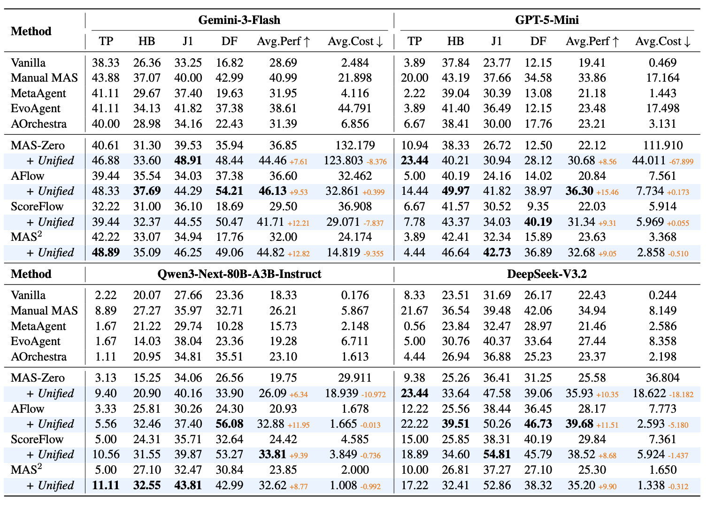

Main Results
The Domain Barrier

As shown in Table 1, manual domain-specific MAS consistently outperform all Automatic-MAS baselines across four orchestrator LLMs. With Gemini-3-Flash, Manual MAS averages 40.99% vs. 28.69% for Vanilla and 31.39% for the best dynamic method (AOrchestra) — confirming that domain expertise is critical in knowledge-intensive tasks. Dynamic methods like MetaAgent and EvoAgent show flashes of potential on J1Bench but fail catastrophically on TravelPlanner, often performing worse than the Vanilla baseline.
Unified-MAS Closes the Gap — and Cuts Cost
Plugging Unified-MAS nodes into pre-defined Automatic-MAS baselines yields consistent improvements across all four LLMs and four benchmarks, with a superior performance–cost trade-off: